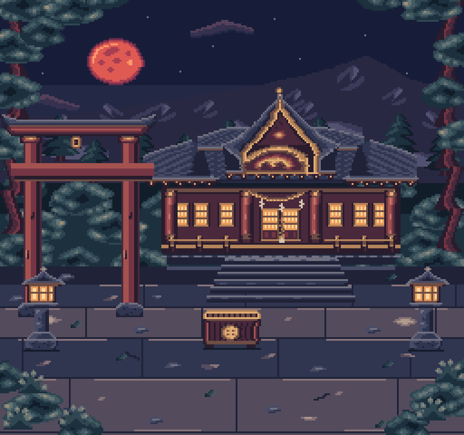
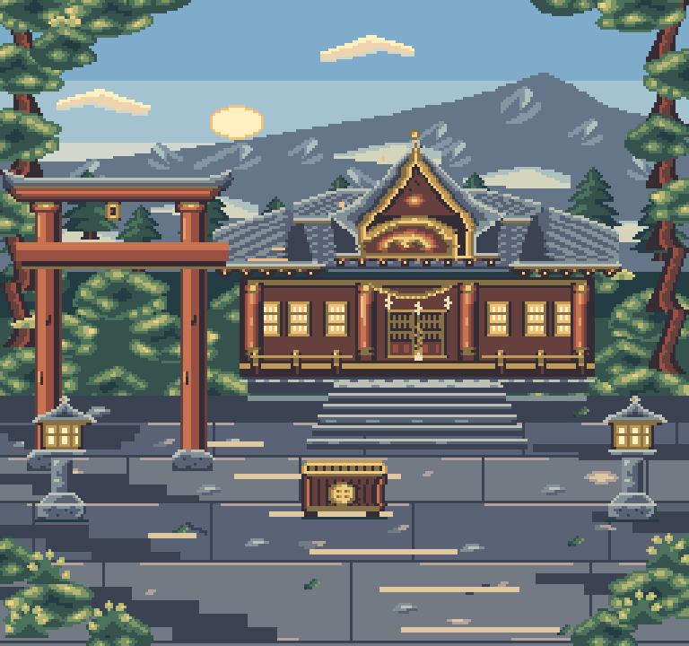
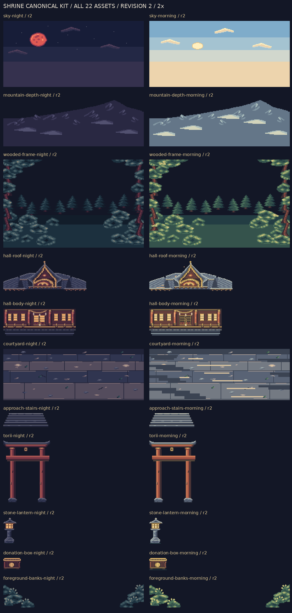
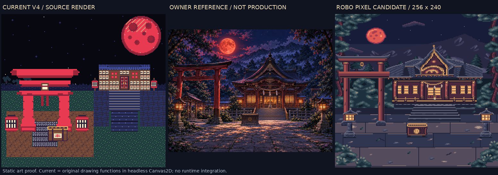
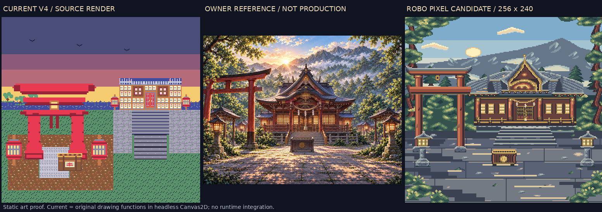
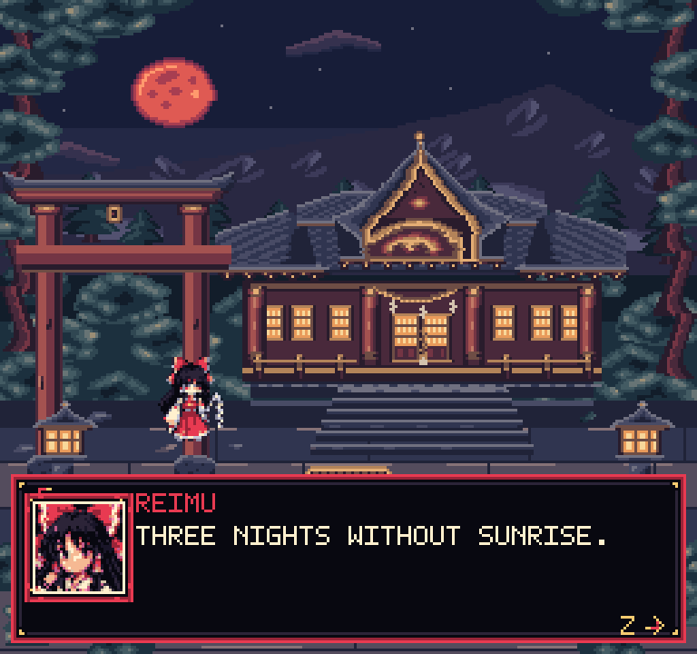
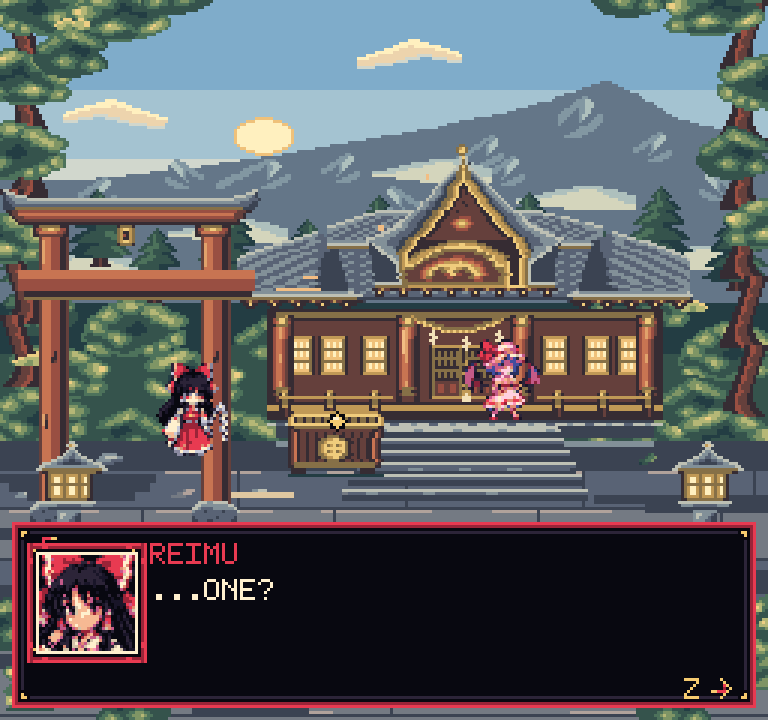

OWNER REVIEW REQUIRED. Static art only. 22 canonical assets, all r2. No runtime integration or formal asset approval.
Current panels are actual source drawing functions executed in headless Canvas2D. Witnesses expose existing actor-anchor overlaps; they are not integration QA. Read README for provenance and limitations.






